Префектура Миэ · Тоба · отель и рёкан
Toba International Hotel: залив Тоба с террасы, лангусты и рёкан Shiojitei
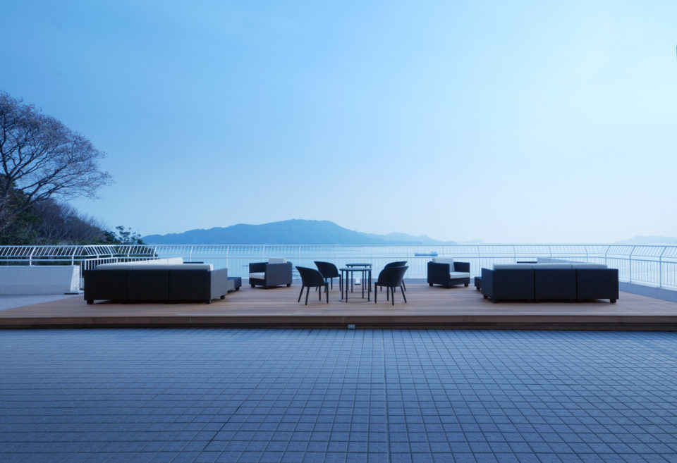
Toba International Hotel открылся на мысе над заливом Тоба в 1964 году и с тех пор принимал членов императорской семьи и гостей из-за рубежа. Рядом, на той же земле, стоит его японский рёкан Shiojitei с ваннами на жемчужной косметике.
Отель
Терраса над заливом
От станции Тоба до отеля всего несколько минут. Дорога поднимается на мыс Мондо, и уже в окне машины чувствуется запах моря. У входа за начищенными стёклами видна терраса, а за ней весь залив Тоба.
Toba International Hotel открылся в 1964 году, когда в Токио проходили Олимпийские игры. Здесь останавливались члены императорской семьи и иностранные гости высокого ранга. В отеле чувствуется строгость старой школы, но она легко уживается с курортной непринуждённостью. Прежде чем идти в номер, стоит выйти на террасу. Справа открывается океан, слева скалистый берег с плоскими каменными площадками, которые веками вымывало море. Вид такой, что придраться не к чему.
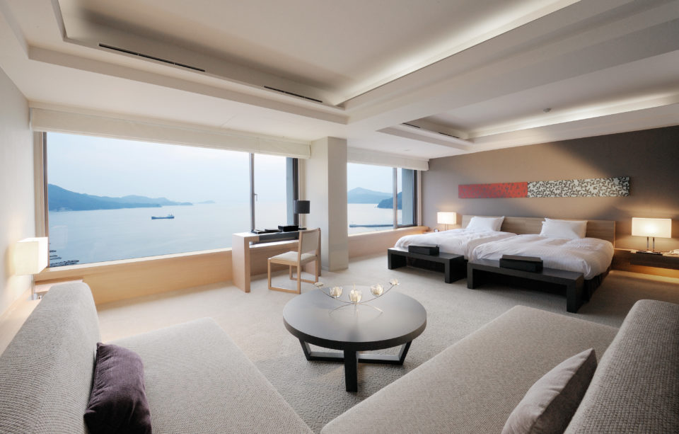
Ужин
Sea Horse: французская кухня из даров Исэ-Сима
Ужинают в главном ресторане Sea Horse. У входа в аквариуме покачиваются морские коньки, и это сразу настраивает на спокойный лад. В основе меню рыба, морепродукты и овощи Исэ-Сима, а готовят их в лёгком курортном французском стиле. Здесь не встретишь тяжёлых классических соусов: вкус продукта остаётся главным, а хруст, текстура и то, как блюдо ощущается во рту, продуманы очень тонко.
Земли Исэ-Сима в древности называли «микэцукуни»: отсюда лучшие продукты отправляли ко двору и в святилище Исэ. Повара отеля знают местные продукты досконально и умеют их показать.
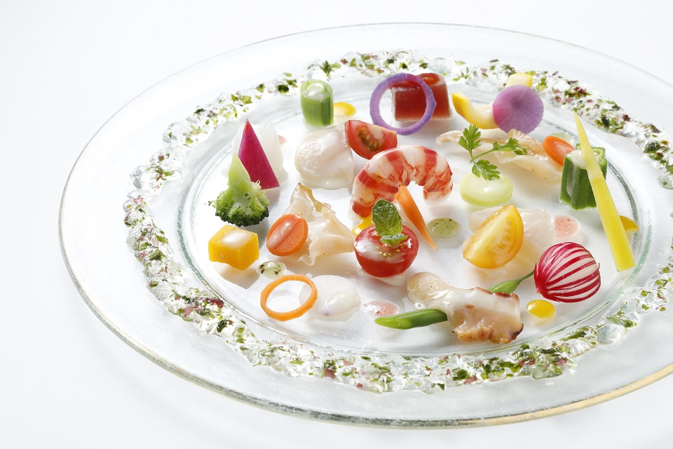
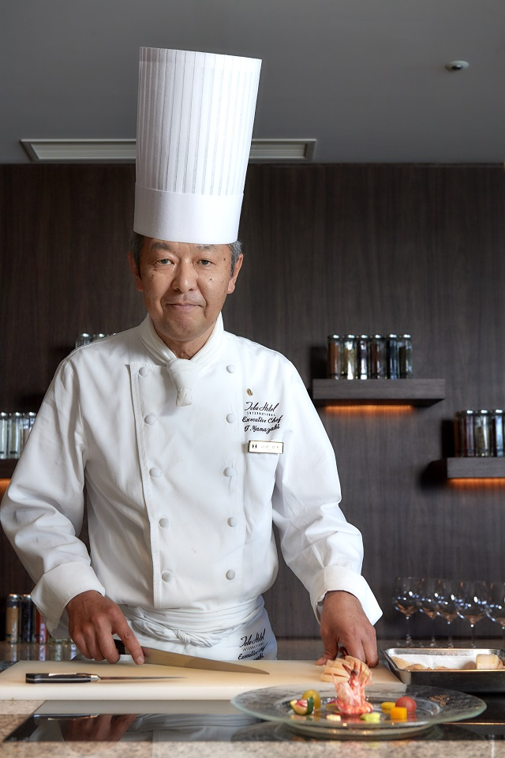
Гордость ресторана это блюда с лангустом исэ-эби. Лангуста из Исэ-Сима запекают в фирменном белом соусе с луком и шампиньонами, и гратен выходит из печи ароматным и очень насыщенным. Лангуст, тушённый в вине, считается одним из главных блюд Sea Horse: к нему подают соус, в котором фирменный коктейльный соус отеля смешан с французской заправкой. Есть и буйабес из лангуста и разных морепродуктов, где шафран подчёркивает вкус моря.
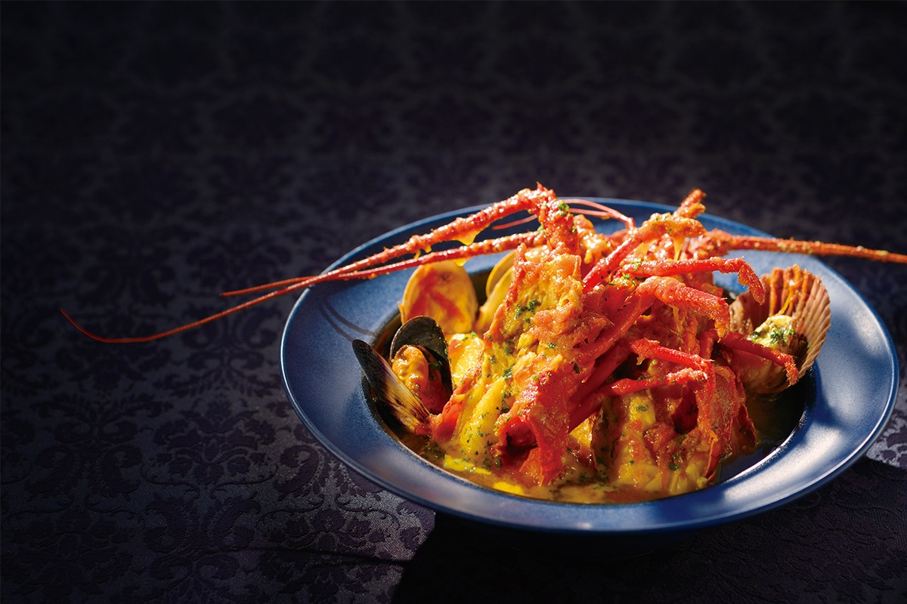
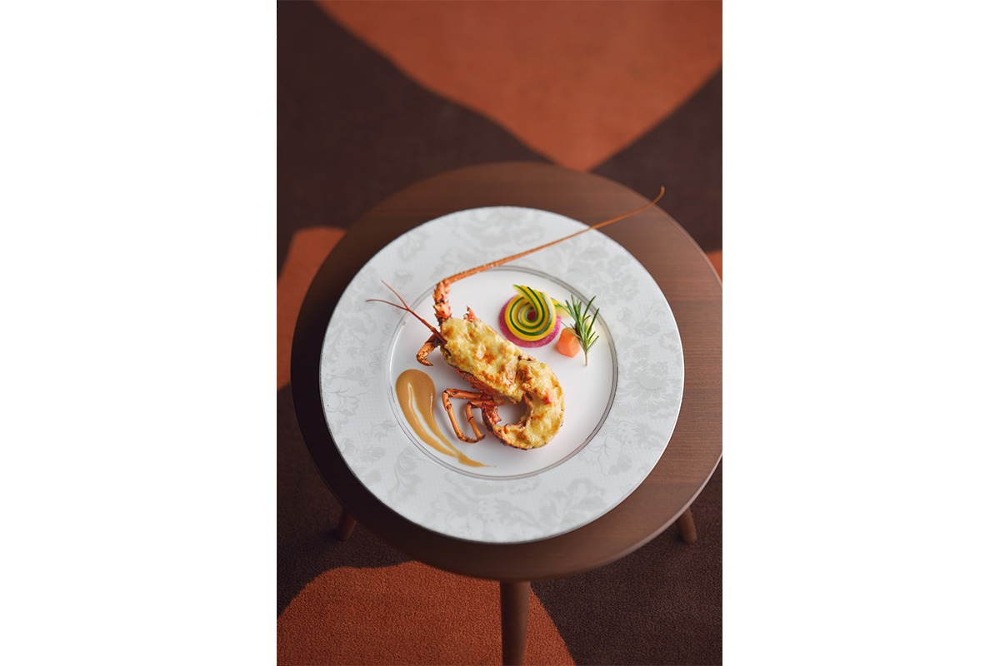
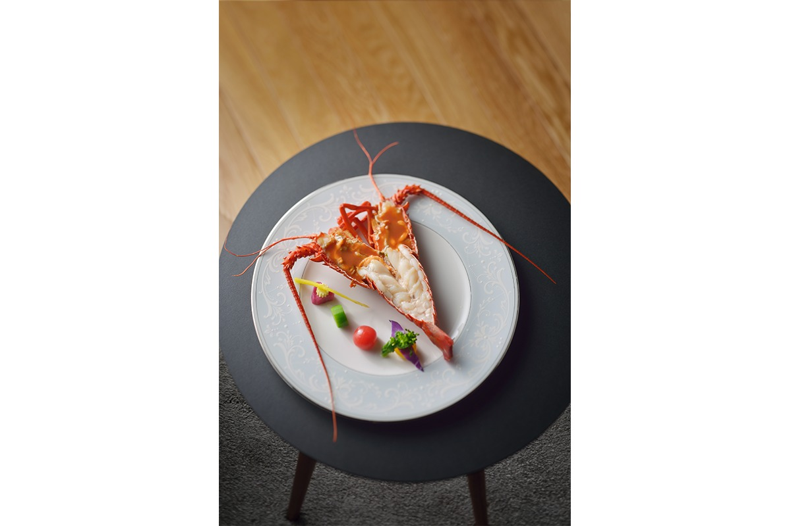
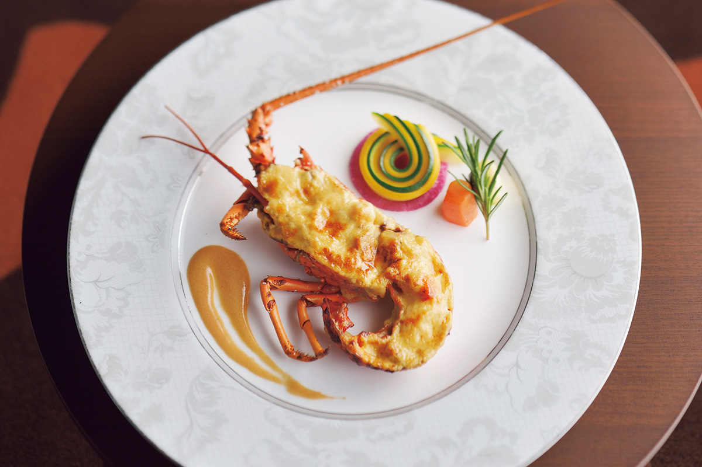
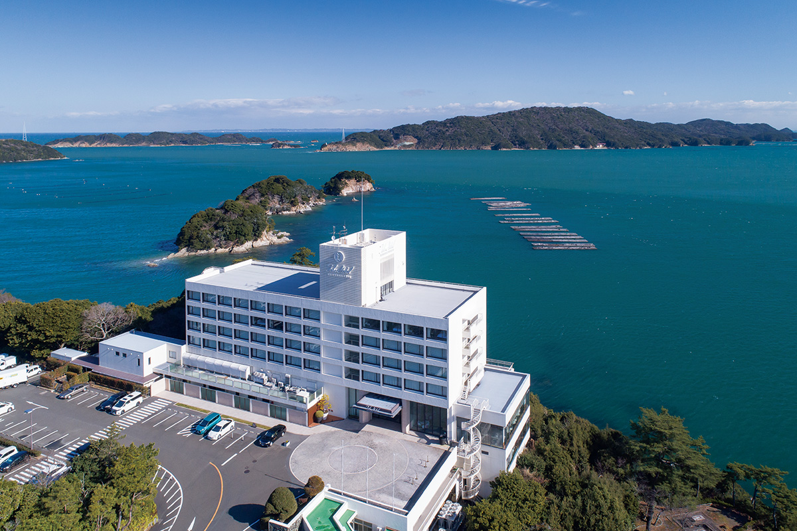
На десерт берите чизкейк, который пекут со дня открытия отеля. Это запечённый чизкейк с мягким бисквитом и нежной сладостью, и кондитеры хранят его рецепт больше полувека. Он три года подряд получал высшую золотую награду Monde Selection. Попробовать его можно в кафе и лаунже, а ещё он продаётся в отеле как фирменный подарок.
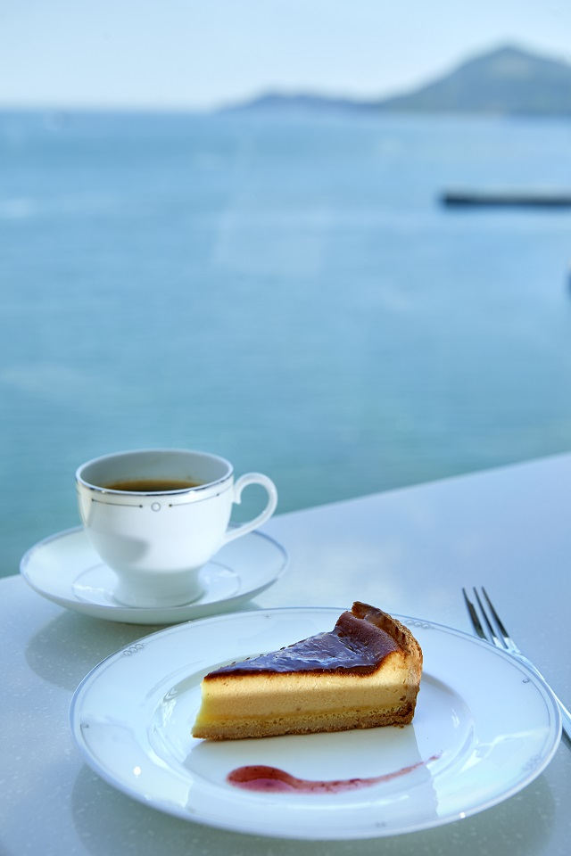
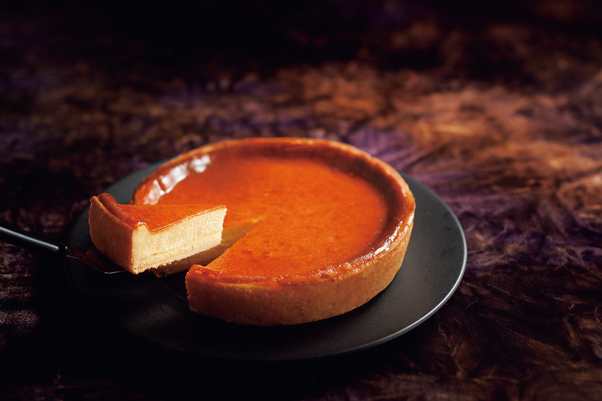
После ужина можно перейти в Library Bar рядом с рестораном. Здесь пьют что-нибудь под ночные огни залива, а на полках библиотеки собрано много книг об истории и культуре Исэ-Сима. Когда за окном становится совсем темно, вечер хочется продлить ещё немного.
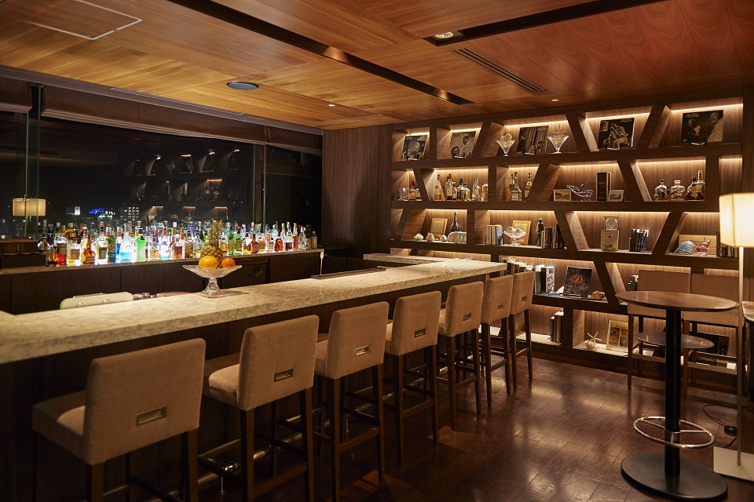
Toba International Hotel
- Адрес
- префектура Миэ, Тоба, Тоба, 1-23-1
- Телефон
- +81 599-26-4121
- Номера
- 80
- Цены / Вход
- ночь с завтраком и ужином на одного от 22 000 иен с налогом (2018), от 28 270 иен с налогом и сервисным сбором (2025)
- Заезд / выезд
- 14:00 / 11:00
- Как добраться
- от станции Тоба (JR или Kintetsu) 5 минут на шаттле отеля, на машине 20 минут от развязки Исэ на автодороге Исэ
- Сайт
- tobahotel.co.jp
Рёкан
Shiojitei: японское крыло отеля
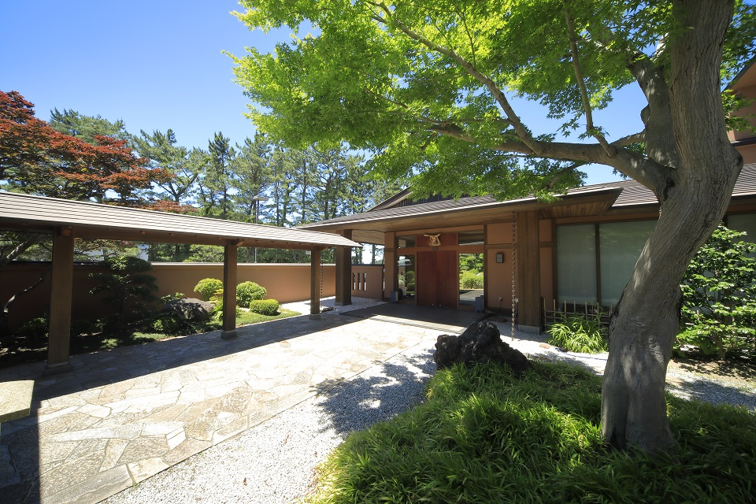
Тоба входит в национальный парк Исэ-Сима, и весь мир знает её как место, где впервые удалось вырастить культивированный жемчуг. Вода в заливе по-прежнему очень прозрачная, и с мыса Мондо её хорошо видно. А за горами отсюда лежит святилище Исэ.
Рёкан Shiojitei открылся в 1964 году как японское крыло Toba International Hotel. Тогда это была гостиница с традиционным убранством для паломников, идущих в святилище Исэ. В апреле 2012 года его обновили и превратили в японский курорт, где традиции Миэ соединены с современным комфортом.
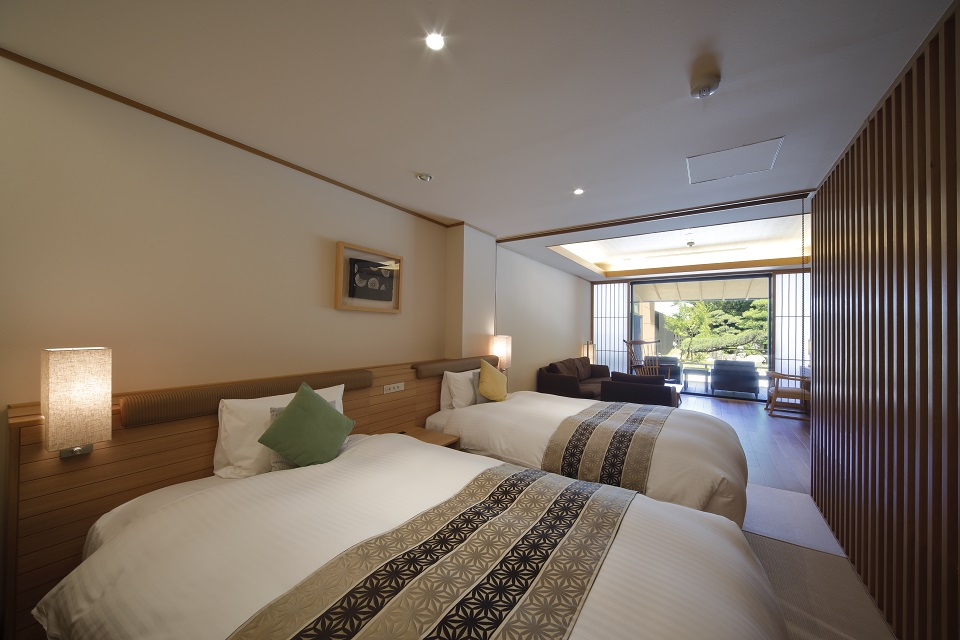
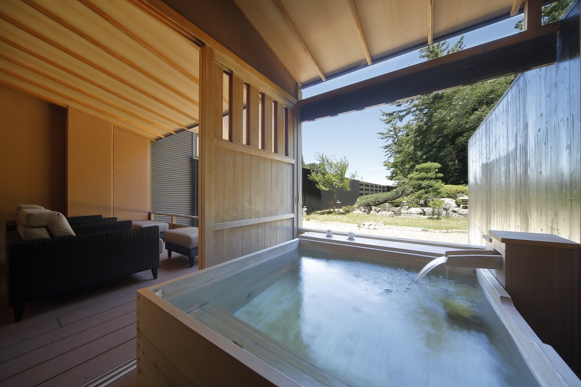
Номера здесь трёх видов: люкс Premium Suite с ванной под открытым небом, японские комнаты на татами, среди которых есть концептуальные номера о культуре Миэ, и номера в стиле японского модерна с двумя кроватями.
Отдельно стоит сказать о Premium Suite: весь этаж закрыт на кодовый замок, так что гостям гарантированы и безопасность, и полное уединение. Ванны на террасах двух видов, из кипариса хиноки и из камня, и обе смотрят в японский сад, так что в воде можно любоваться сменой сезонов. Стены украшают трафареты исэ-катагами, местное традиционное ремесло, а в номере заваривают собственную смесь чая исэ-тя.
Ванны
Жемчуг в воде
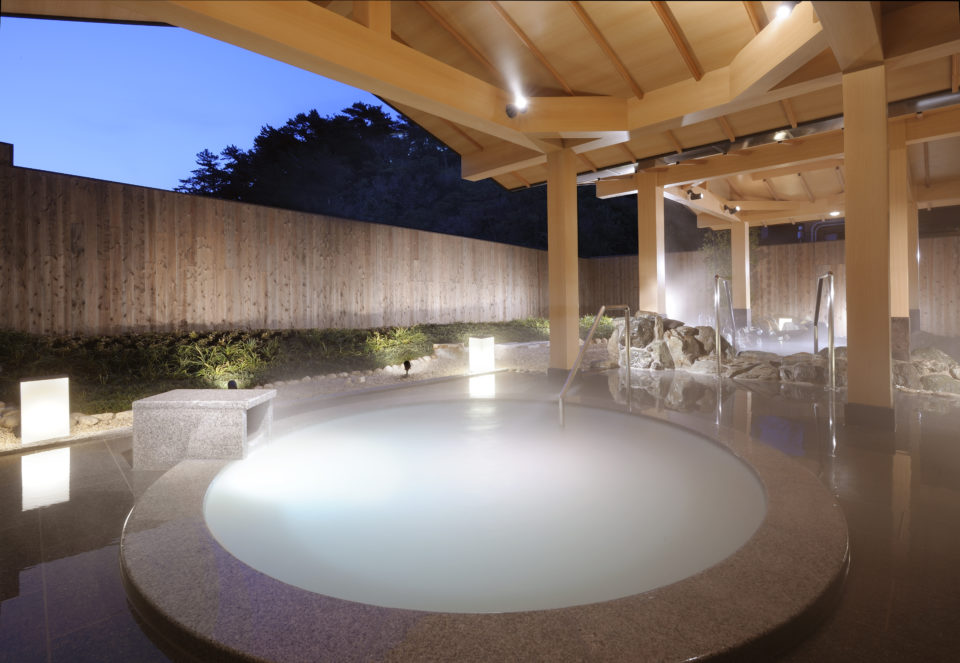
После ванны в номере обязательно загляните в общую баню «Токовака-но ю». Её ванны «Жемчужная аврора», каменная и скальная, больше нигде не встретишь. Состав для них специально для Shiojitei разработала MIKIMOTO COSMETICS, марка компании, которая первой вырастила жемчуг. В воду добавлены ценные для кожи вещества, которые получают только из жемчуга и раковин жемчужницы акоя, поэтому вода мягкая и словно обволакивает кожу. Косметика той же марки, выпущенная только для Shiojitei, ждёт гостей и в номерах.
Цвет воды меняется по сезонам. Каменная ванна бывает розовой, скальная летом голубая, зимой золотая.
Ужин
Shiraishi: кайсэки с французским акцентом
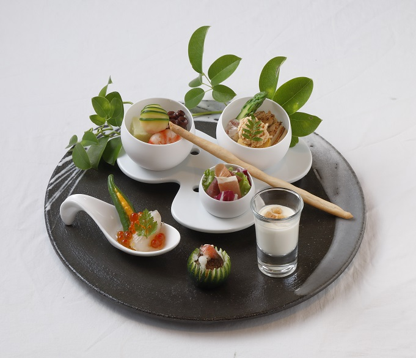
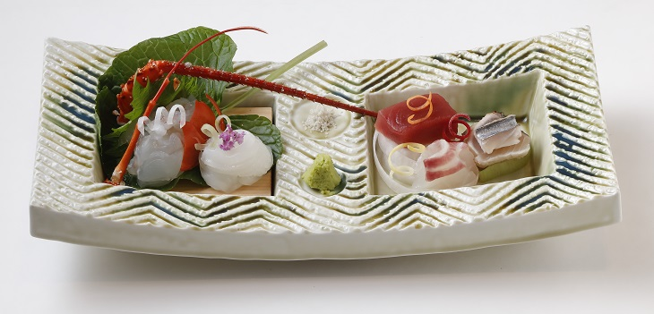
Ужин подают в ресторане Shiraishi на втором этаже. Его название взято от «о-сираиси», белых камней, которые подносят святилищу Исэ во время сикинэн сэнгу, перестройки святилища раз в 20 лет.
Здесь готовят современный кайсэки из местной рыбы и овощей. К классическому японскому ужину из многих блюд добавлены приёмы курортной французской кухни, которой славится Toba International Hotel.
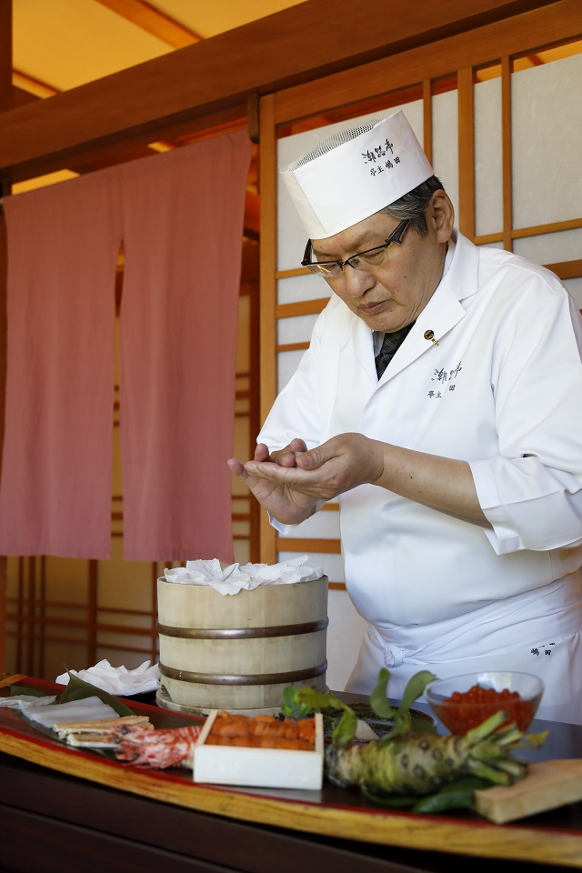
«Наверное, потому что в эти воды впадает вода, богатая минералами, рыба и морепродукты у берегов Исэ-Сима так хороши. Чистая вода, которая течёт в залив Исэ, и определяет качество местной рыбы»
шеф рёкана Shiojitei
Повара сами ездят на остров Тоси, смотрят улов и покупают рыбу на торгах. Закуски подают в посуде банко-яки, традиционной керамике города Ёккаити.
Рёкан Shiojitei
- Адрес
- префектура Миэ, Тоба, Тоба, 1-23-1
- Телефон
- +81 599-26-5477
- Номера
- 46
- Цены / Вход
- ночь с завтраком и ужином от 19 800 иен на человека при двухместном размещении, с налогом (2018)
- Заезд / выезд
- 14:00 / 11:00
- Как добраться
- из Нагои на JR или экспрессе Kintetsu до станции Тоба, оттуда 5 минут на шаттле или такси
- Сайт
- shiojitei.jp
Фото: Кацуо Такасима.